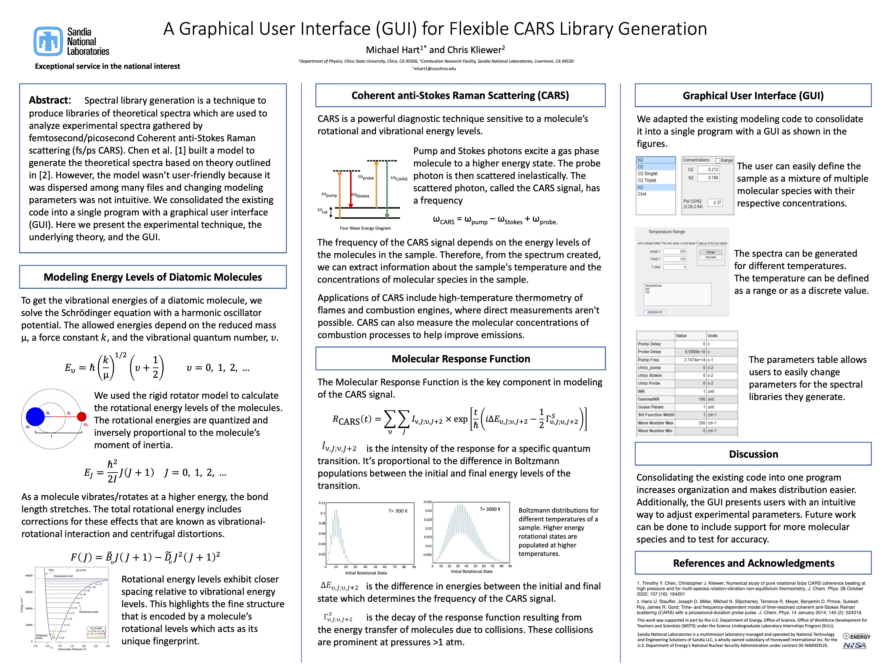

My name is Michael and I graduated from Chico State in August 2024 with a BS in Physics and a minor in Math. This website will display my projects.
Abstract: Spectral library generation is a technique to produce libraries of theoretical spectra that are used to analyze experimental spectra gathered from femtosecond/picosecond Coherent anti-Stokes Raman scattering (fs/ps CARS). However, managing the library generation code for several molecular species and varying experimental parameters is a daunting task. To address this issue, we built a graphical user interface (GUI) that gives users the flexibility to adjust experimental parameters; while combining many iterations of the code into one, easily distributed program. We adapted the existing code to consolidate it all into one program while focusing on providing users with a robust and flexible way to generate theoretical libraries. Future work can be done to include support for additional molecular species, add quality-of-life features, and verify the accuracy of the spectra produced by the program for high pressures.
